Directory
Electrical & Computer Engineering
Department Chair
 Durgamadhab MisraProfessor
Durgamadhab MisraProfessorDistinguished Professor
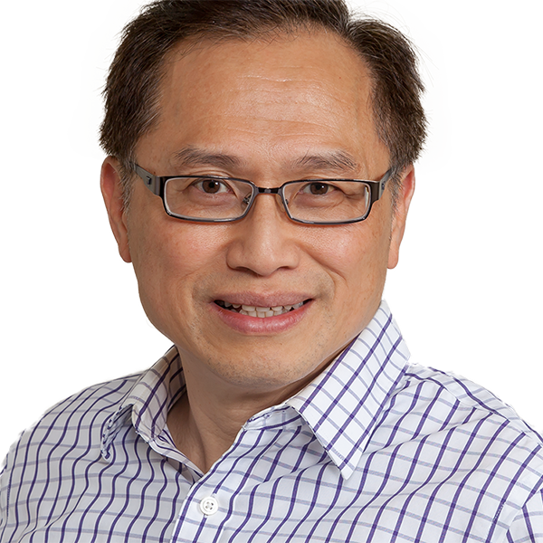
Nirwan AnsariDistinguished ProfessorCloud computinggreen communications and networkingInternet of Thingsmultimedia communicationsAlexander HaimovichDistinguished ProfessorRadarlocalization and antenna arraysmimo radarmodulation classification Moshe KamDistinguished ProfessorSystem TheoryControlDetectionEstimation
Moshe KamDistinguished ProfessorSystem TheoryControlDetectionEstimation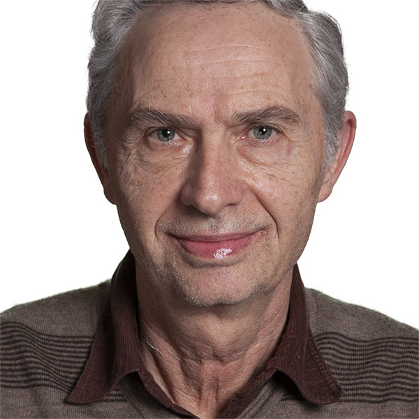
Jacob SavirDistinguished ProfessorTest of hardwareReliabilityfault analysisCAD tools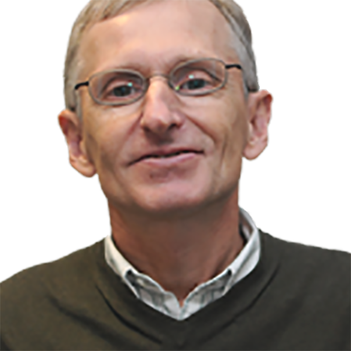
Leonid TsybeskovDistinguished Professorsemiconductor nanostructures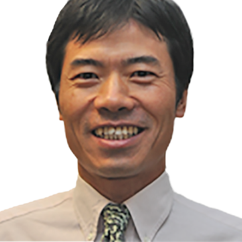
Mengchu ZhouDistinguished ProfessorIntelligent automation/transportationPetri netsAIIoTProfessor
Ali AbdiProfessorCommunication and Signal ProcessingSystems Biology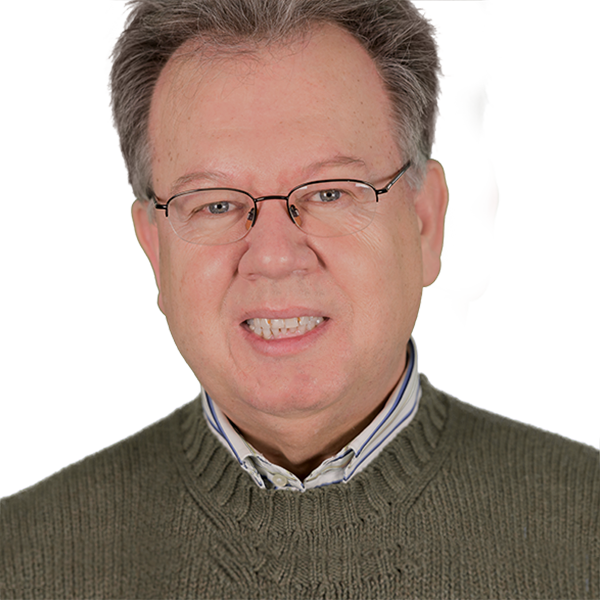
Ali AkansuProfessorTheory of signals and transformsfinancial engineeringbig data financehigh performance digital signal processing (DSP) (FPGA & GPU computing)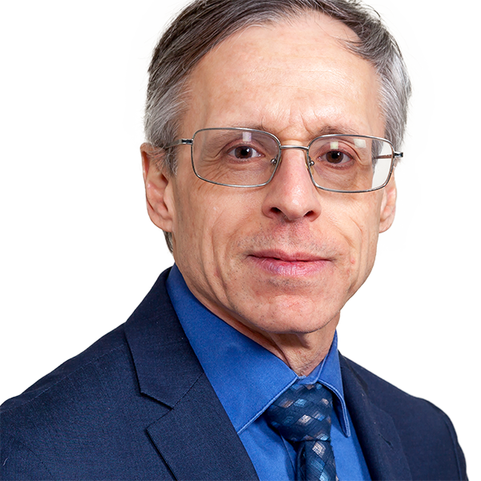
John CarpinelliProfessorEngineering educationParallel Processinginterconnection networksByron ChenDirector of ECE LaboratoriesAtam DhawanChief Strategic Innovation Officermedical imagingmulti-modality medical image analysismulti-grid image reconstructionwavelets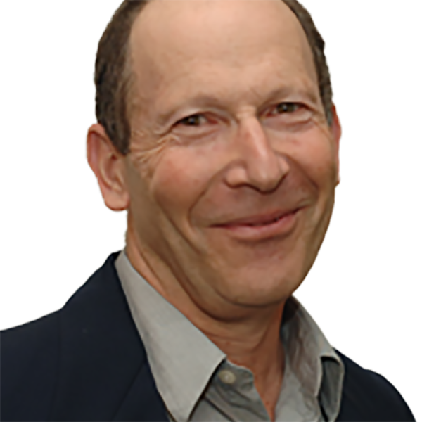
Haim GrebelProfessor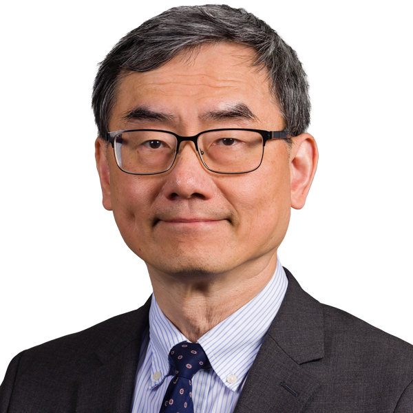
Edwin HouProfessorAutonomous vehiclesnonlinear optimizationnetwork intrusion detectioninfrared imaging Abdallah KhreishahProfessorVisible-light communicationAdversarial examplesMachine learningwireless networks
Abdallah KhreishahProfessorVisible-light communicationAdversarial examplesMachine learningwireless networks Joerg KliewerProfessorError-correcting codeswireless communicationscommunication networksinformation theoryRyoko MathesUndergraduate Advisor and Curriculum CoordinatorRoberto Rojas-CessaProfessorHis current research interests are in energynetworking and communicationintelligent systemsamong others
Joerg KliewerProfessorError-correcting codeswireless communicationscommunication networksinformation theoryRyoko MathesUndergraduate Advisor and Curriculum CoordinatorRoberto Rojas-CessaProfessorHis current research interests are in energynetworking and communicationintelligent systemsamong others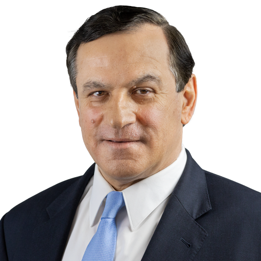
Sotirios ZiavrasVice Provost for Graduate Studies and Dean of Graduate FacultyAdvanced Computer ArchitectureParallel ProcessingReconfigurable ComputingChip MultiprocessorsAssociate Professor
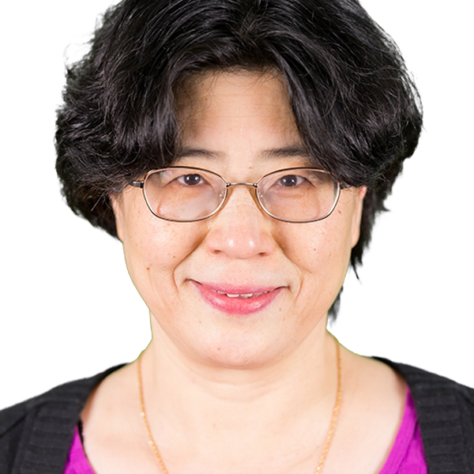
Hongya GeAssociate ProfessorStatistical and Array Signal Processing and DSP Space-Time Multiuser DetectionWireless Communications MIMO for Broadband Wireless Access Time-Varying Signal/Channel Modelling and AnalysisSource Localization and Tracking by Passive Arrays Adaptive FiltersInterference Suppression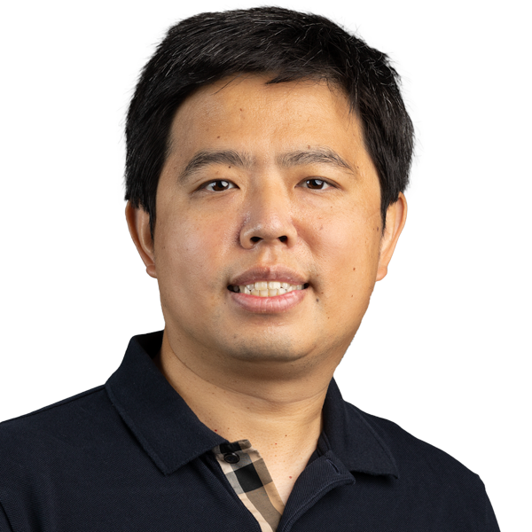
Tao HanAssociate Professorsmart gridBlockchain systemWireless SystemAR/MR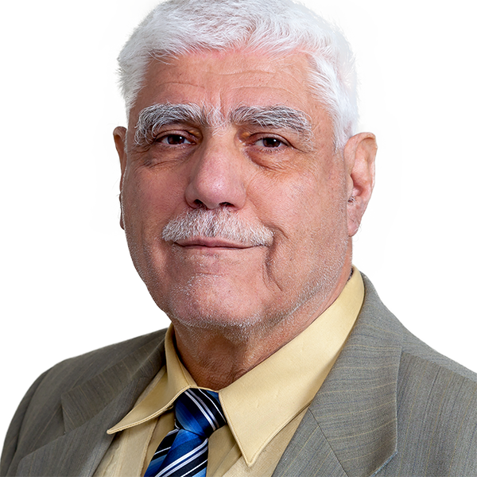
Walid HubbiAssociate Professor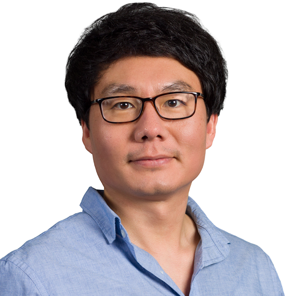
Dong KoAssociate ProfessorSynthesis and Characterization of Colloidal Quantum DotsInfrared PhotodetectorsSolar CellsThermoelectric Energy Harvesting Qing LiuAssociate ProfessorHigh Performance Computingfile systemstorage systemBig data
Qing LiuAssociate ProfessorHigh Performance Computingfile systemstorage systemBig data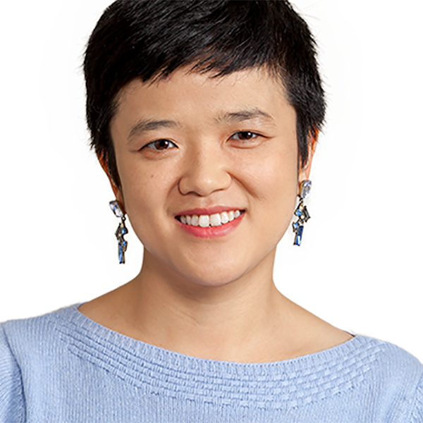
Xuan LiuAssociate ProfessorPhilip PongAssociate Professornon-contact sensingsensors for cyber-physical systemsSensorspower systems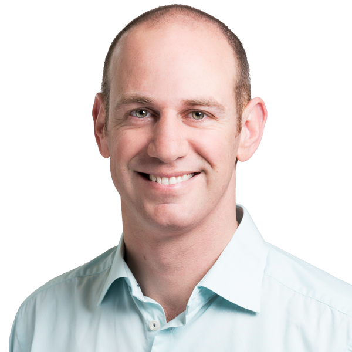
Joshua TaylorAssociate Professor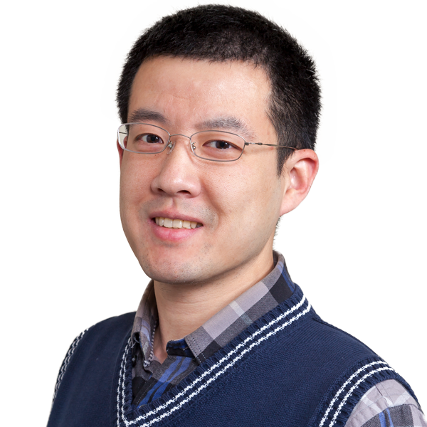
Cong WangAssociate ProfessorroboticsControlsdesignManufacturingAssistant Professor
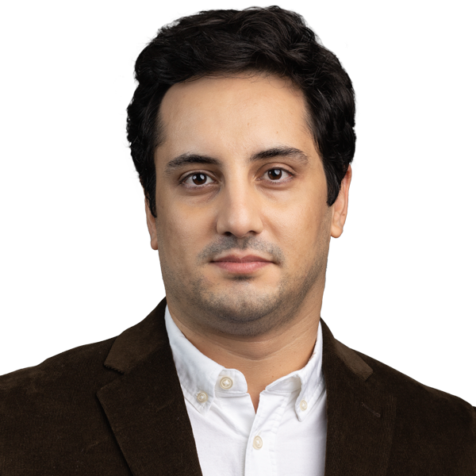
Shaahin AngiziAssistant ProfessorIn-Memory ComputingIn-Sensor ComputingMemory SecurityAI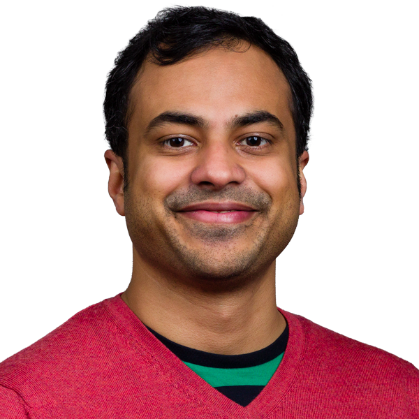
Arnob GhoshAssistant ProfessorReinforcement LearningOnline LearningOptimizationwireless communication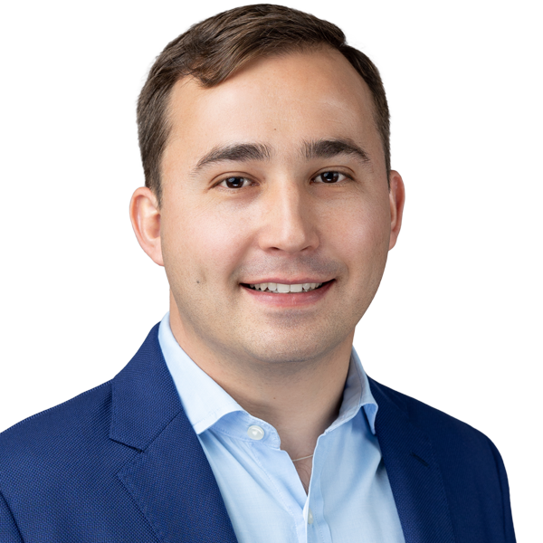
Marcos NettoAssistant ProfessorControldynamical systemshybrid systemsKoopman operator Anirudh SridharAssistant ProfessorGraph TheoryProbabilitystatisticsSpreading processes
Anirudh SridharAssistant ProfessorGraph TheoryProbabilitystatisticsSpreading processesSenior University Lecturer
Azeez BhavnagarwalaAdjunct InstructorMichael DentatoAdjunct InstructorTariq ElkourdiAdjunct InstructorDynamic spectrum managementInterference managementMulti-RAT systems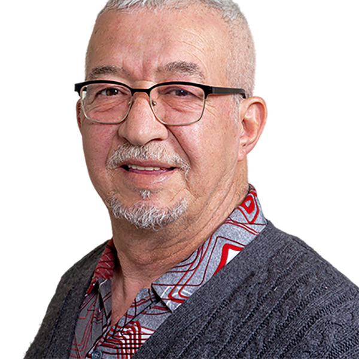
Mohammed FeknousSenior University Lecturer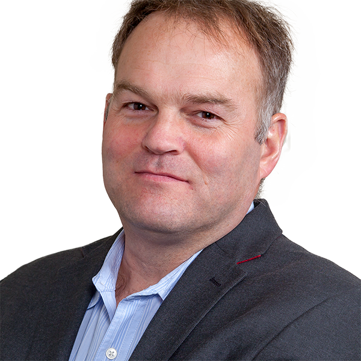
Donald GiesAdjunct Instructor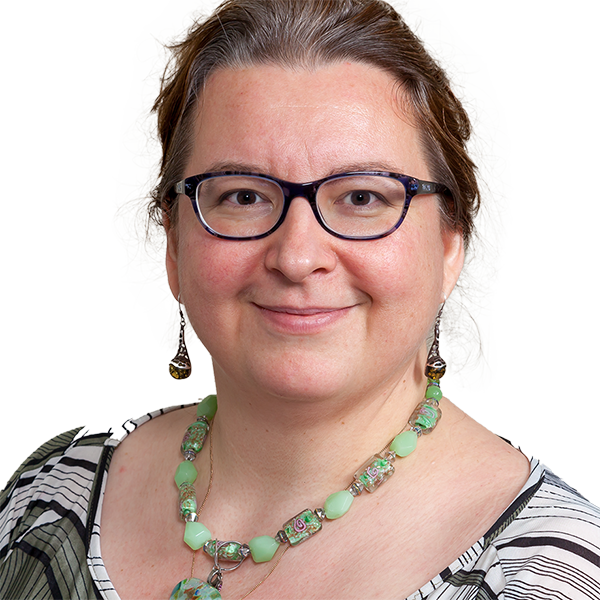
Oksana ManzhuraSenior University LecturerRFMicrowave DesignAntenna DesignNQR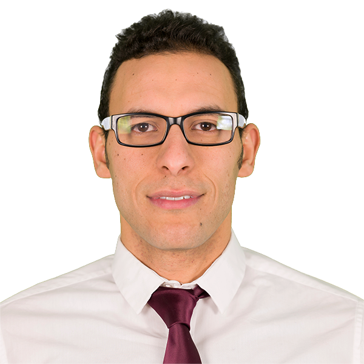
Ahmed MousaAdjunct InstructorHeba MoussaAdjunct Instructor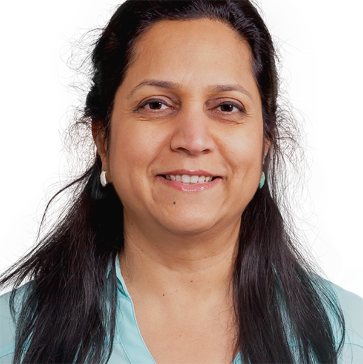
Ratna RajSenior University LecturerPower convertersDigital TwinRafael WilchesAdjunct Instructor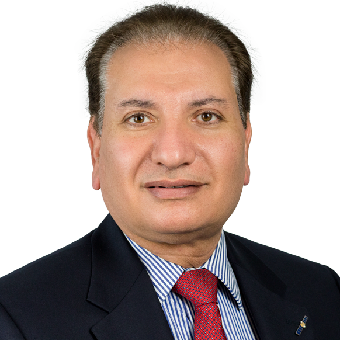
Ahmed YousefAdjunct InstructorUniversity Lecturer
Jean Walker-SolerUniversity Lecturer1Mengchu ZhouDistinguished Professor91,669citations153h-index2Nirwan AnsariDistinguished Professor38,811citations98h-index3Alexander HaimovichDistinguished Professor20,473citations55h-index4Abdallah KhreishahProfessor10,836citations43h-index5Ali AbdiProfessor10,047citations36h-index6Ali AkansuProfessor7,962citations40h-index7Atam DhawanChief Strategic Innovation Officer6,199citations41h-index8Moshe KamDistinguished Professor5,916citations38h-index9Leonid TsybeskovDistinguished Professor5,808citations34h-index10Philip PongAssociate Professor5,644citations41h-index11Jacob SavirDistinguished Professor5,377citations29h-index12Tao HanAssociate Professor5,324citations37h-index13Shaahin AngiziAssistant Professor5,158citations40h-index14Joerg KliewerProfessor4,723citations33h-index15Qing LiuAssociate Professor4,672citations29h-index16Roberto Rojas-CessaProfessor4,567citations32h-index17Dong KoAssociate Professor3,171citations26h-index18Edwin HouProfessor3,157citations24h-index19Marcos NettoAssistant Professor2,923citations16h-index20Arnob GhoshAssistant Professor1,809citations20h-index21Cong WangAssociate Professor793citations15h-index22Anirudh SridharAssistant Professor367citations11h-index23Walid HubbiAssociate Professor331citations9h-index—Azeez BhavnagarwalaAdjunct Instructor—citations—h-index—John CarpinelliProfessor—citations—h-index—Byron ChenDirector of ECE Laboratories—citations—h-index—Michael DentatoAdjunct Instructor—citations—h-index—Tariq ElkourdiAdjunct Instructor—citations—h-index—Mohammed FeknousSenior University Lecturer—citations—h-index—Hongya GeAssociate Professor—citations—h-index—Donald GiesAdjunct Instructor—citations—h-index—Haim GrebelProfessor—citations—h-index—Xuan LiuAssociate Professor—citations—h-index—Oksana ManzhuraSenior University Lecturer—citations—h-index—Ryoko MathesUndergraduate Advisor and Curriculum Coordinator—citations—h-index—Durgamadhab MisraProfessor—citations—h-index—Ahmed MousaAdjunct Instructor—citations—h-index—Heba MoussaAdjunct Instructor—citations—h-index—Ratna RajSenior University Lecturer—citations—h-index—Joshua TaylorAssociate Professor—citations—h-index—Jean Walker-SolerUniversity Lecturer—citations—h-index—Rafael WilchesAdjunct Instructor—citations—h-index—Ahmed YousefAdjunct Instructor—citations—h-index—Sotirios ZiavrasVice Provost for Graduate Studies and Dean of Graduate Faculty—citations—h-index
Abdallah KhreishahProfessor10,836citations43h-index5Ali AbdiProfessor10,047citations36h-index6Ali AkansuProfessor7,962citations40h-index7Atam DhawanChief Strategic Innovation Officer6,199citations41h-index8Moshe KamDistinguished Professor5,916citations38h-index9Leonid TsybeskovDistinguished Professor5,808citations34h-index10Philip PongAssociate Professor5,644citations41h-index11Jacob SavirDistinguished Professor5,377citations29h-index12Tao HanAssociate Professor5,324citations37h-index13Shaahin AngiziAssistant Professor5,158citations40h-index14Joerg KliewerProfessor4,723citations33h-index15Qing LiuAssociate Professor4,672citations29h-index16Roberto Rojas-CessaProfessor4,567citations32h-index17Dong KoAssociate Professor3,171citations26h-index18Edwin HouProfessor3,157citations24h-index19Marcos NettoAssistant Professor2,923citations16h-index20Arnob GhoshAssistant Professor1,809citations20h-index21Cong WangAssociate Professor793citations15h-index22Anirudh SridharAssistant Professor367citations11h-index23Walid HubbiAssociate Professor331citations9h-index—Azeez BhavnagarwalaAdjunct Instructor—citations—h-index—John CarpinelliProfessor—citations—h-index—Byron ChenDirector of ECE Laboratories—citations—h-index—Michael DentatoAdjunct Instructor—citations—h-index—Tariq ElkourdiAdjunct Instructor—citations—h-index—Mohammed FeknousSenior University Lecturer—citations—h-index—Hongya GeAssociate Professor—citations—h-index—Donald GiesAdjunct Instructor—citations—h-index—Haim GrebelProfessor—citations—h-index—Xuan LiuAssociate Professor—citations—h-index—Oksana ManzhuraSenior University Lecturer—citations—h-index—Ryoko MathesUndergraduate Advisor and Curriculum Coordinator—citations—h-index—Durgamadhab MisraProfessor—citations—h-index—Ahmed MousaAdjunct Instructor—citations—h-index—Heba MoussaAdjunct Instructor—citations—h-index—Ratna RajSenior University Lecturer—citations—h-index—Joshua TaylorAssociate Professor—citations—h-index—Jean Walker-SolerUniversity Lecturer—citations—h-index—Rafael WilchesAdjunct Instructor—citations—h-index—Ahmed YousefAdjunct Instructor—citations—h-index—Sotirios ZiavrasVice Provost for Graduate Studies and Dean of Graduate Faculty—citations—h-indexAli AbdiProfessorCommunication and Signal ProcessingSystems BiologyAli AkansuProfessorTheory of signals and transformsfinancial engineeringbig data financehigh performance digital signal processing (DSP) (FPGA & GPU computing)Shaahin AngiziAssistant ProfessorIn-Memory ComputingIn-Sensor ComputingMemory SecurityAINirwan AnsariDistinguished ProfessorCloud computinggreen communications and networkingInternet of Thingsmultimedia communicationsAzeez BhavnagarwalaAdjunct InstructorJohn CarpinelliProfessorEngineering educationParallel Processinginterconnection networksByron ChenDirector of ECE LaboratoriesMichael DentatoAdjunct InstructorAtam DhawanChief Strategic Innovation Officermedical imagingmulti-modality medical image analysismulti-grid image reconstructionwaveletsTariq ElkourdiAdjunct InstructorDynamic spectrum managementInterference managementMulti-RAT systemsMohammed FeknousSenior University LecturerHongya GeAssociate ProfessorStatistical and Array Signal Processing and DSP Space-Time Multiuser DetectionWireless Communications MIMO for Broadband Wireless Access Time-Varying Signal/Channel Modelling and AnalysisSource Localization and Tracking by Passive Arrays Adaptive FiltersInterference SuppressionArnob GhoshAssistant ProfessorReinforcement LearningOnline LearningOptimizationwireless communicationDonald GiesAdjunct InstructorHaim GrebelProfessorAlexander HaimovichDistinguished ProfessorRadarlocalization and antenna arraysmimo radarmodulation classificationTao HanAssociate Professorsmart gridBlockchain systemWireless SystemAR/MREdwin HouProfessorAutonomous vehiclesnonlinear optimizationnetwork intrusion detectioninfrared imagingWalid HubbiAssociate ProfessorMoshe KamDistinguished ProfessorSystem TheoryControlDetectionEstimationAbdallah KhreishahProfessorVisible-light communicationAdversarial examplesMachine learningwireless networksJoerg KliewerProfessorError-correcting codeswireless communicationscommunication networksinformation theoryDong KoAssociate ProfessorSynthesis and Characterization of Colloidal Quantum DotsInfrared PhotodetectorsSolar CellsThermoelectric Energy HarvestingQing LiuAssociate ProfessorHigh Performance Computingfile systemstorage systemBig dataXuan LiuAssociate ProfessorOksana ManzhuraSenior University LecturerRFMicrowave DesignAntenna DesignNQRRyoko MathesUndergraduate Advisor and Curriculum CoordinatorDurgamadhab MisraProfessorAhmed MousaAdjunct InstructorHeba MoussaAdjunct InstructorMarcos NettoAssistant ProfessorControldynamical systemshybrid systemsKoopman operatorPhilip PongAssociate Professornon-contact sensingsensors for cyber-physical systemsSensorspower systemsRatna RajSenior University LecturerPower convertersDigital TwinRoberto Rojas-CessaProfessorHis current research interests are in energynetworking and communicationintelligent systemsamong othersJacob SavirDistinguished ProfessorTest of hardwareReliabilityfault analysisCAD toolsAnirudh SridharAssistant ProfessorGraph TheoryProbabilitystatisticsSpreading processesJoshua TaylorAssociate ProfessorLeonid TsybeskovDistinguished Professorsemiconductor nanostructuresJean Walker-SolerUniversity LecturerCong WangAssociate ProfessorroboticsControlsdesignManufacturingRafael WilchesAdjunct InstructorAhmed YousefAdjunct InstructorMengchu ZhouDistinguished ProfessorIntelligent automation/transportationPetri netsAIIoTSotirios ZiavrasVice Provost for Graduate Studies and Dean of Graduate FacultyAdvanced Computer ArchitectureParallel ProcessingReconfigurable ComputingChip Multiprocessors
Moshe KamDistinguished ProfessorSystem TheoryControlDetectionEstimationAbdallah KhreishahProfessorVisible-light communicationAdversarial examplesMachine learningwireless networksJoerg KliewerProfessorError-correcting codeswireless communicationscommunication networksinformation theoryDong KoAssociate ProfessorSynthesis and Characterization of Colloidal Quantum DotsInfrared PhotodetectorsSolar CellsThermoelectric Energy HarvestingQing LiuAssociate ProfessorHigh Performance Computingfile systemstorage systemBig dataXuan LiuAssociate ProfessorOksana ManzhuraSenior University LecturerRFMicrowave DesignAntenna DesignNQRRyoko MathesUndergraduate Advisor and Curriculum CoordinatorDurgamadhab MisraProfessorAhmed MousaAdjunct InstructorHeba MoussaAdjunct InstructorMarcos NettoAssistant ProfessorControldynamical systemshybrid systemsKoopman operatorPhilip PongAssociate Professornon-contact sensingsensors for cyber-physical systemsSensorspower systemsRatna RajSenior University LecturerPower convertersDigital TwinRoberto Rojas-CessaProfessorHis current research interests are in energynetworking and communicationintelligent systemsamong othersJacob SavirDistinguished ProfessorTest of hardwareReliabilityfault analysisCAD toolsAnirudh SridharAssistant ProfessorGraph TheoryProbabilitystatisticsSpreading processesJoshua TaylorAssociate ProfessorLeonid TsybeskovDistinguished Professorsemiconductor nanostructuresJean Walker-SolerUniversity LecturerCong WangAssociate ProfessorroboticsControlsdesignManufacturingRafael WilchesAdjunct InstructorAhmed YousefAdjunct InstructorMengchu ZhouDistinguished ProfessorIntelligent automation/transportationPetri netsAIIoTSotirios ZiavrasVice Provost for Graduate Studies and Dean of Graduate FacultyAdvanced Computer ArchitectureParallel ProcessingReconfigurable ComputingChip MultiprocessorsFaculty whose annual citations grew over their five most recent complete years (the current year is excluded — it is still accruing). Citations lag research by 2–5 years, and faculty with large established citation bases naturally show flatter recent growth — this highlights recent momentum, not overall impact or research quality.
Anirudh SridharAssistant Professor2021–2025+49%/yrmomentum94recent/yrArnob GhoshAssistant Professor2021–2025+24%/yrmomentum323recent/yrTao HanAssociate Professor2021–2025+17%/yrmomentum753recent/yrRoberto Rojas-CessaProfessor2021–2025+16%/yrmomentum449recent/yrMarcos NettoAssistant Professor2021–2025+13%/yrmomentum521recent/yrMengchu ZhouDistinguished Professor2021–2025+11%/yrmomentum11025recent/yrCong WangAssociate Professor2021–2025+7%/yrmomentum104recent/yrQing LiuAssociate Professor2021–2025+6%/yrmomentum511recent/yrPhilip PongAssociate Professor2021–2025+5%/yrmomentum665recent/yrCitation counts support, they don’t replace, judgment.
Professors
Nirwan AnsariDistinguished ProfessorCloud computinggreen communications and networkingInternet of Thingsmultimedia communicationsAlexander HaimovichDistinguished ProfessorRadarlocalization and antenna arraysmimo radarmodulation classificationMoshe KamDistinguished ProfessorSystem TheoryControlDetectionEstimationJacob SavirDistinguished ProfessorTest of hardwareReliabilityfault analysisCAD toolsLeonid TsybeskovDistinguished Professorsemiconductor nanostructuresMengchu ZhouDistinguished ProfessorIntelligent automation/transportationPetri netsAIIoTAli AbdiProfessorCommunication and Signal ProcessingSystems BiologyAli AkansuProfessorTheory of signals and transformsfinancial engineeringbig data financehigh performance digital signal processing (DSP) (FPGA & GPU computing)John CarpinelliProfessorEngineering educationParallel Processinginterconnection networksByron ChenDirector of ECE LaboratoriesAtam DhawanChief Strategic Innovation Officermedical imagingmulti-modality medical image analysismulti-grid image reconstructionwaveletsHaim GrebelProfessorEdwin HouProfessorAutonomous vehiclesnonlinear optimizationnetwork intrusion detectioninfrared imagingAbdallah KhreishahProfessorVisible-light communicationAdversarial examplesMachine learningwireless networksJoerg KliewerProfessorError-correcting codeswireless communicationscommunication networksinformation theoryRyoko MathesUndergraduate Advisor and Curriculum CoordinatorRoberto Rojas-CessaProfessorHis current research interests are in energynetworking and communicationintelligent systemsamong othersSotirios ZiavrasVice Provost for Graduate Studies and Dean of Graduate FacultyAdvanced Computer ArchitectureParallel ProcessingReconfigurable ComputingChip MultiprocessorsAssociate Professors
Hongya GeAssociate ProfessorStatistical and Array Signal Processing and DSP Space-Time Multiuser DetectionWireless Communications MIMO for Broadband Wireless Access Time-Varying Signal/Channel Modelling and AnalysisSource Localization and Tracking by Passive Arrays Adaptive FiltersInterference SuppressionTao HanAssociate Professorsmart gridBlockchain systemWireless SystemAR/MRWalid HubbiAssociate ProfessorDong KoAssociate ProfessorSynthesis and Characterization of Colloidal Quantum DotsInfrared PhotodetectorsSolar CellsThermoelectric Energy HarvestingQing LiuAssociate ProfessorHigh Performance Computingfile systemstorage systemBig dataXuan LiuAssociate ProfessorPhilip PongAssociate Professornon-contact sensingsensors for cyber-physical systemsSensorspower systemsJoshua TaylorAssociate ProfessorCong WangAssociate ProfessorroboticsControlsdesignManufacturingAssistant Professors
Shaahin AngiziAssistant ProfessorIn-Memory ComputingIn-Sensor ComputingMemory SecurityAIArnob GhoshAssistant ProfessorReinforcement LearningOnline LearningOptimizationwireless communicationMarcos NettoAssistant ProfessorControldynamical systemshybrid systemsKoopman operatorAnirudh SridharAssistant ProfessorGraph TheoryProbabilitystatisticsSpreading processesSenior Lecturers
Azeez BhavnagarwalaAdjunct InstructorMichael DentatoAdjunct InstructorTariq ElkourdiAdjunct InstructorDynamic spectrum managementInterference managementMulti-RAT systemsMohammed FeknousSenior University LecturerDonald GiesAdjunct InstructorOksana ManzhuraSenior University LecturerRFMicrowave DesignAntenna DesignNQRAhmed MousaAdjunct InstructorHeba MoussaAdjunct InstructorRatna RajSenior University LecturerPower convertersDigital TwinRafael WilchesAdjunct InstructorAhmed YousefAdjunct InstructorUniversity Lecturers
Jean Walker-SolerUniversity LecturerNo faculty match “”.